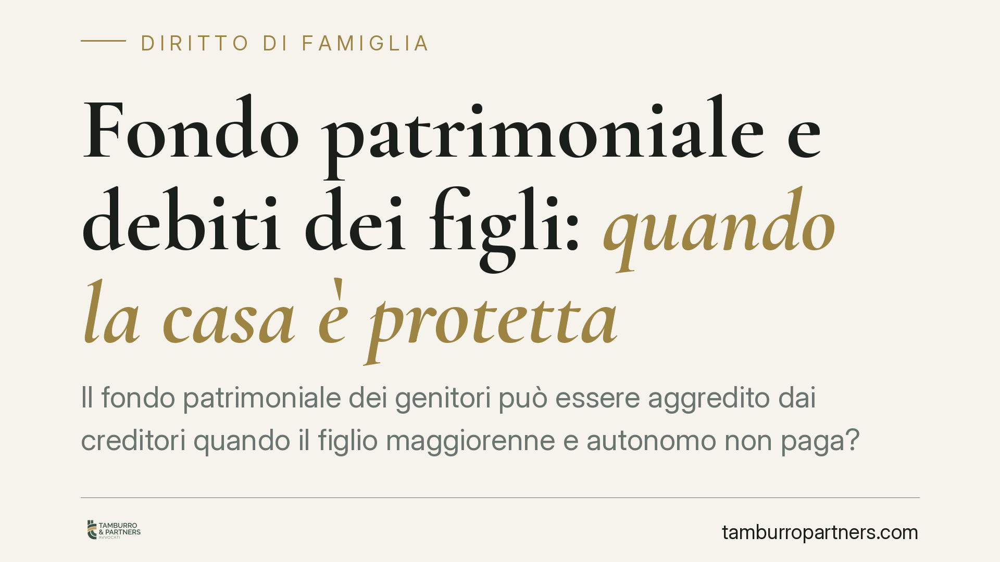

Fondo patrimoniale e debiti dei figli: quando la casa è protetta
Il fondo patrimoniale dei genitori può essere aggredito dai creditori quando il figlio maggiorenne e autonomo non paga? La distinzione decisiva non riguarda chi ha contratto il debito, ma la sua funzione: se non serve ai bisogni della famiglia protetta dal fondo, l'esecuzione incontra un limite preciso. Vediamo perché conta.

Il caso: la garanzia prestata per il figlio
Un genitore costituisce un fondo patrimoniale sulla casa di famiglia. Anni dopo, garantisce un debito del figlio ormai maggiorenne, economicamente indipendente e con un nucleo familiare proprio. Il figlio non paga. Il creditore prova ad aggredire l'immobile conferito nel fondo.
La questione ruota su un punto: quel debito serviva o no a soddisfare i bisogni della famiglia protetta dal fondo? La risposta cambia tutto.
Inquadramento normativo
Il fondo patrimoniale è disciplinato dagli artt. 167 e seguenti del Codice civile. È un vincolo su determinati beni destinato a far fronte ai bisogni della famiglia.
La norma chiave in tema di esecuzione è l'art. 170 c.c.: l'esecuzione sui beni del fondo non può avere luogo per debiti che il creditore conosceva essere stati contratti per scopi estranei ai bisogni della famiglia. Non è quindi il soggetto che contrae il debito a fare la differenza, ma la sua funzione.
La giurisprudenza di legittimità ha da tempo chiarito che la nozione di "bisogni della famiglia" va riferita al nucleo tutelato dal fondo e non si estende automaticamente a esigenze di soggetti terzi, ancorché legati da vincolo di parentela. L'orientamento consolidato interpreta la locuzione in senso non angusto, ma neppure illimitato: non vi rientrano le obbligazioni sorte per finalità estranee al mantenimento e alla vita della famiglia nucleare.
Un figlio maggiorenne, autonomo e titolare di un proprio nucleo non fa più parte, sotto il profilo dei bisogni economici, della famiglia protetta dal fondo dei genitori. Il debito che lo riguarda tende quindi a collocarsi fuori dal perimetro dell'art. 170 c.c.
> Nota di trasparenza: eventuali pronunce recentissime su questa specifica fattispecie andranno verificate presso i repertori ufficiali prima di essere richiamate come precedente vincolante. In questa sede esponiamo l'orientamento interpretativo consolidato.
Fondo patrimoniale e debiti dei figli: cosa cambia in concreto
Per il genitore che ha costituito un fondo, la conseguenza è netta: garantire un debito del figlio adulto e autonomo non trasforma automaticamente quel debito in un'obbligazione della famiglia nucleare. Se la finalità è estranea ai bisogni protetti dal fondo, il creditore trova un limite nell'esecuzione sull'immobile.
Attenzione però a due profili distinti, spesso confusi:
- L'art. 170 c.c. pone un limite all'esecuzione: riguarda ciò che il creditore può o non può pignorare a fondo già costituito.
- L'art. 2901 c.c. disciplina l'azione revocatoria: consente al creditore di far dichiarare inefficace nei suoi confronti l'atto costitutivo del fondo, se compiuto in pregiudizio delle sue ragioni.
Sono strumenti diversi. Il fondo costituito dopo il sorgere del debito, o in prossimità di una crisi economica prevedibile, resta esposto alla revocatoria a prescindere dalla funzione del debito garantito. La protezione dell'art. 170 c.c. opera bene quando il fondo è genuino, risalente e non strumentale.
Inoltre, la posizione soggettiva del creditore rileva: l'impignorabilità presuppone la conoscenza (o conoscibilità) da parte del creditore dell'estraneità del debito ai bisogni familiari. Un aspetto probatorio da non sottovalutare.
Il ruolo delle banche
Quando la garanzia è prestata a favore di un istituto di credito, la difesa impone di ricostruire con precisione la destinazione delle somme e lo stato del figlio debitore al momento dell'operazione. Documentare l'autonomia economica del figlio e l'estraneità dello scopo ai bisogni del nucleo protetto è spesso l'elemento decisivo.
Cosa fare in concreto
- Verifica la data di costituzione del fondo rispetto al debito garantito: un fondo successivo espone a revocatoria (art. 2901 c.c.).
- Ricostruisci la funzione del debito: raccogli la documentazione che dimostra la destinazione delle somme a scopi estranei ai bisogni della famiglia nucleare.
- Documenta l'autonomia del figlio debitore: nucleo familiare proprio, indipendenza economica, residenza separata.
- Non prestare garanzie con leggerezza: firmare una fideiussione per un figlio adulto è un atto che può riflettersi sul patrimonio personale, al di là del fondo.
- Consigliamo di sottoporre l'atto costitutivo a una revisione prima di ogni operazione di garanzia rilevante, per valutare l'esposizione effettiva.
La tutela del fondo patrimoniale non è automatica né assoluta. Dipende dalla genuinità del vincolo, dalla cronologia degli atti e, soprattutto, dalla reale destinazione del debito. Su questi elementi si gioca la differenza tra un bene protetto e un bene aggredibile.
Disclaimer
Contributo informativo a cura di Tamburro & Partners Avvocati - Avv. Giuseppe Tamburro. Non costituisce parere legale.
Ogni famiglia ha il suo equilibrio.
Separazione, divorzio, affidamento, assegno: se vuoi un confronto riservato su una specifica situazione, scrivi allo studio. Ti rispondiamo entro un giorno lavorativo.